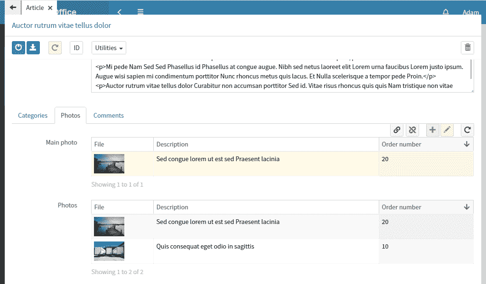

Article photos
Open the article class and create a mainPhoto attribute with Reference type. This type means that related links will be stored in this attribute. Select photo class in the Reference class field.
Create a photos attribute with Reference type. It will store photos related to an article. Select photo class in the Reference class field. Check Multiple box.
Export the class then go to Office. Open any article and add (or create) a few photos. Please note that the same photo can be added to different articles, because a link is stored inside each article.